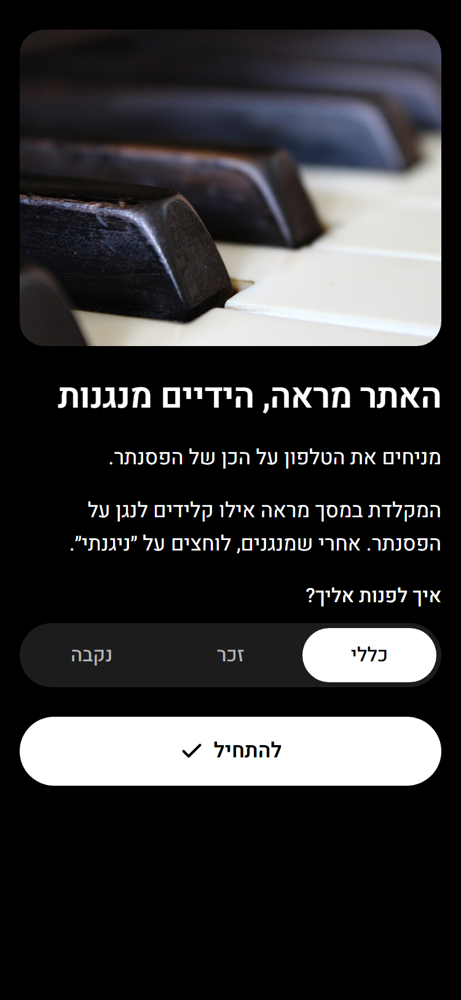
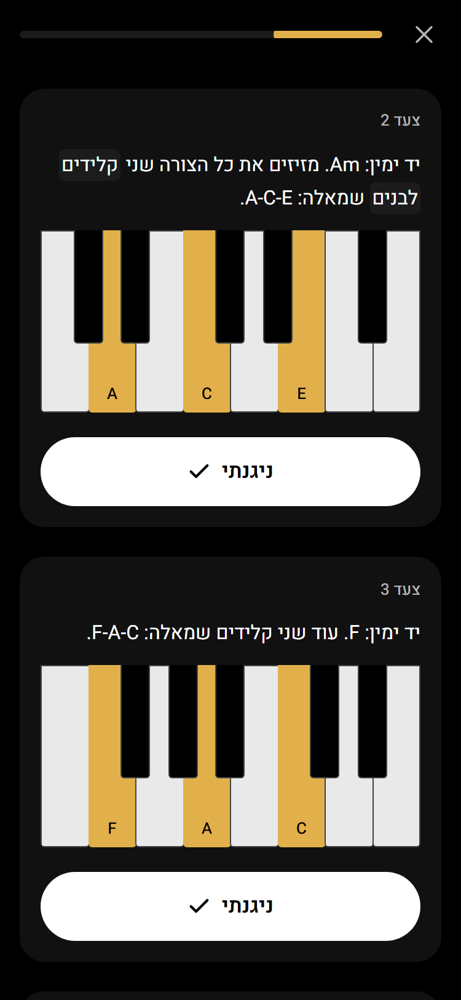
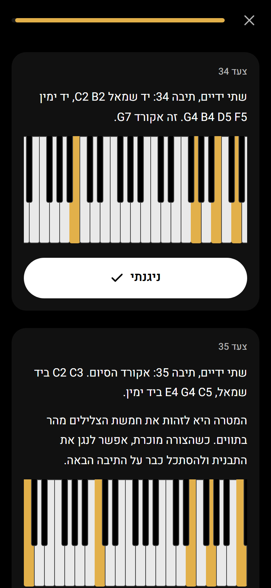
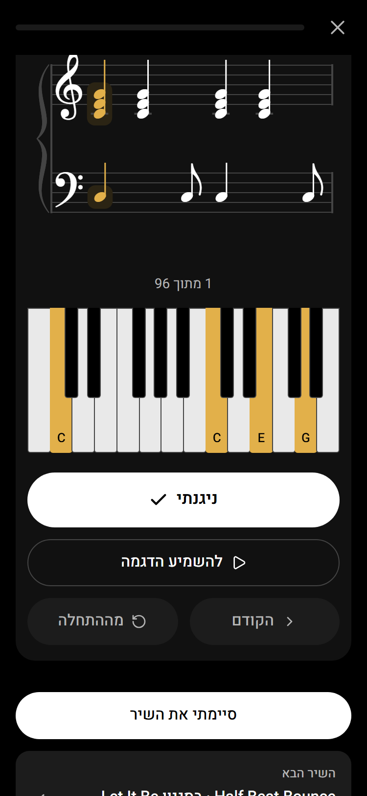
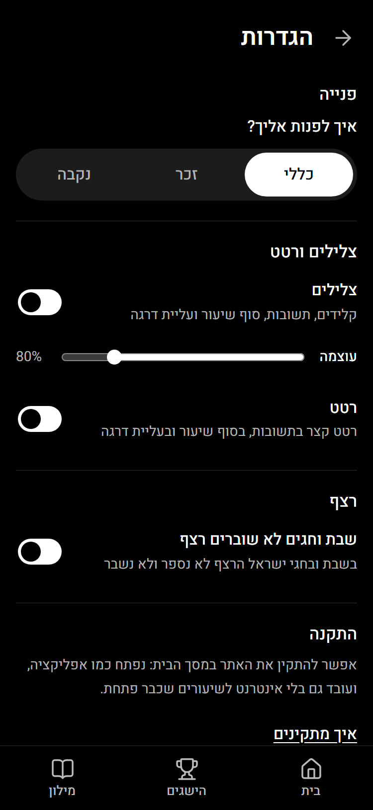

שלב 2 · תרגול על הפסנתר
צילומים ב-375px. האתר כבר מעודכן: yudisaiagent-cell.github.io/legato-looks/site
מסך פתיחה, פעם אחת
"האתר מראה, הידיים מנגנות". בחירה איך לפנות אליך: כללי, זכר או נקבה. הטקסט משתנה לפי הבחירה, ואפשר לשנות בהגדרות.

שיעור: צעדים לנגינה על הפסנתר
בלי "0/3" ובלי ספירת הקשות. המקלדת מראה את כל האקורד, בלי גלילה. לחיצה עליה רק משמיעה צליל. "ניגנתי" מסמן את הצעד ומגלגל לצעד הבא. במחשב: רווח או חץ שמאלה.

אקורד רחב (באך, תיבה 34)
גם אקורד על שלוש אוקטבות נכנס שלם במסך. הקלידים צרים יותר, והשמות מוסתרים כשאין להם מקום.

שיר
"ניגנתי" עובר לאקורד הבא, "הקודם" חוזר אחד. המקלדת זזה עם האקורד הנוכחי. "להשמיע הדגמה" נשאר.

הגדרות
בראש ההגדרות: "פנייה", אותה בחירה כמו במסך הפתיחה.
